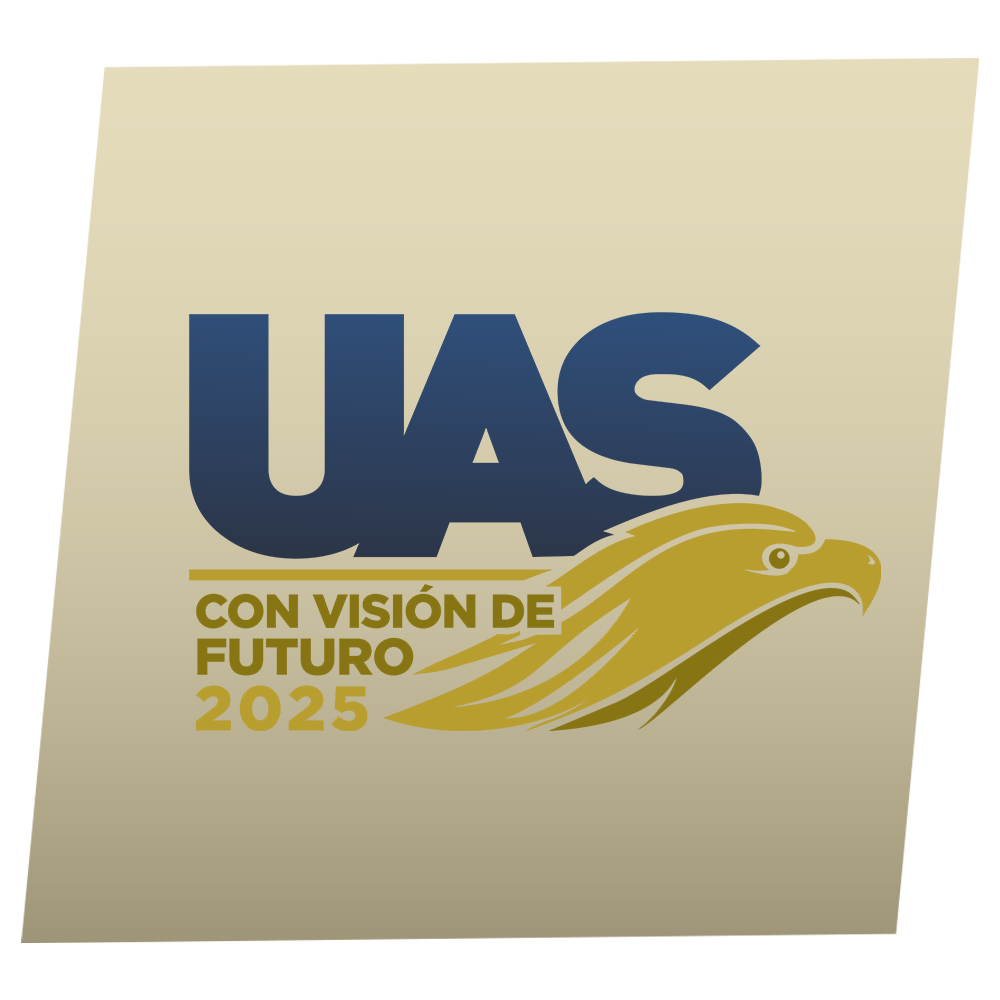
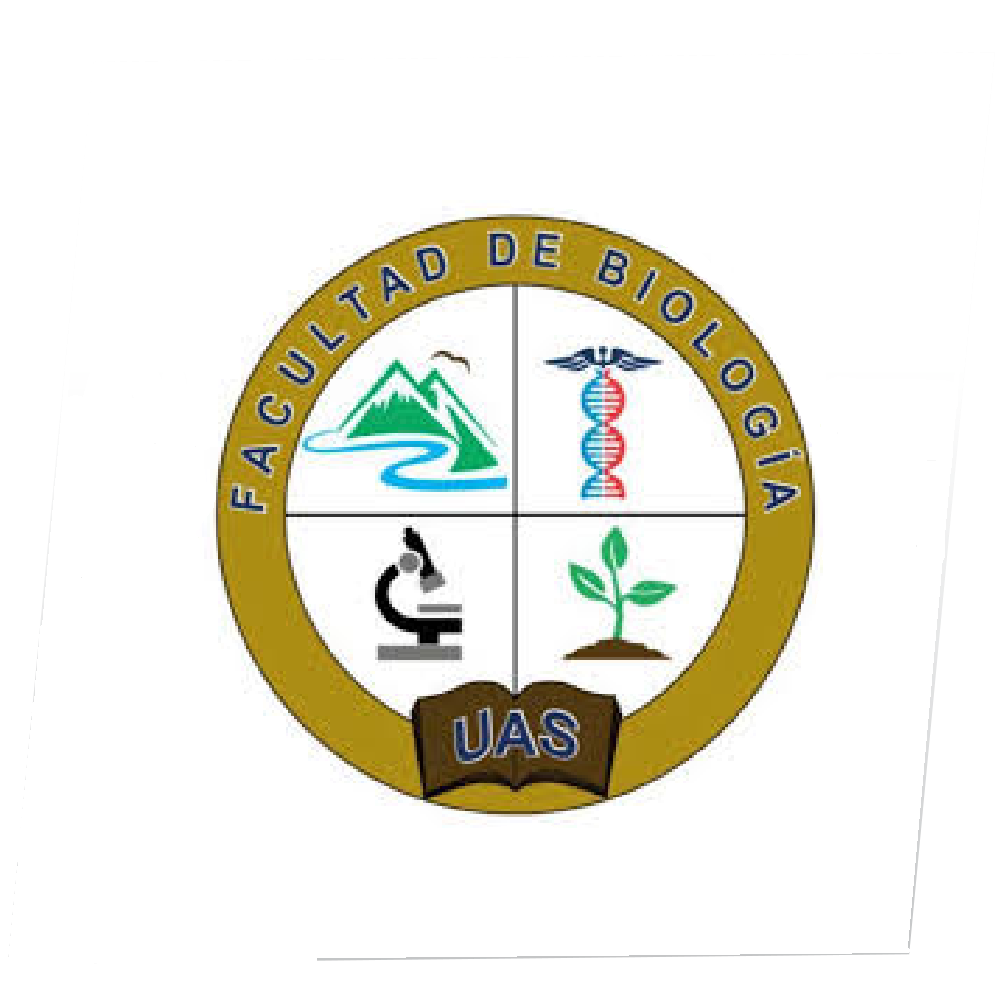
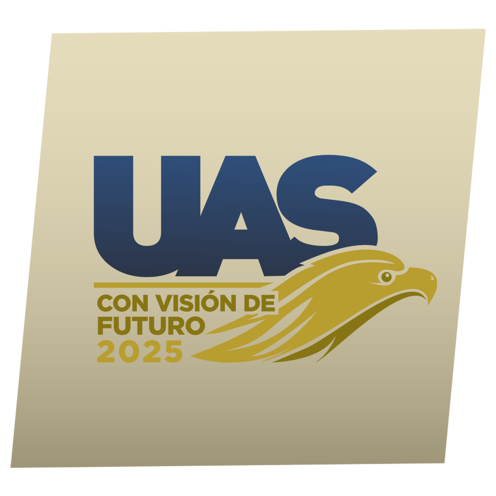
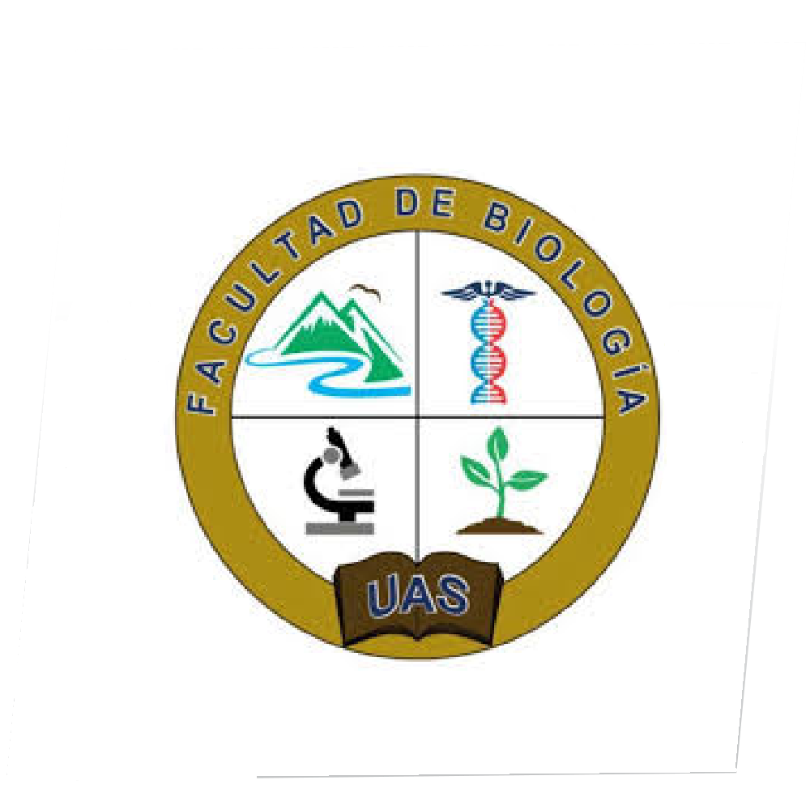
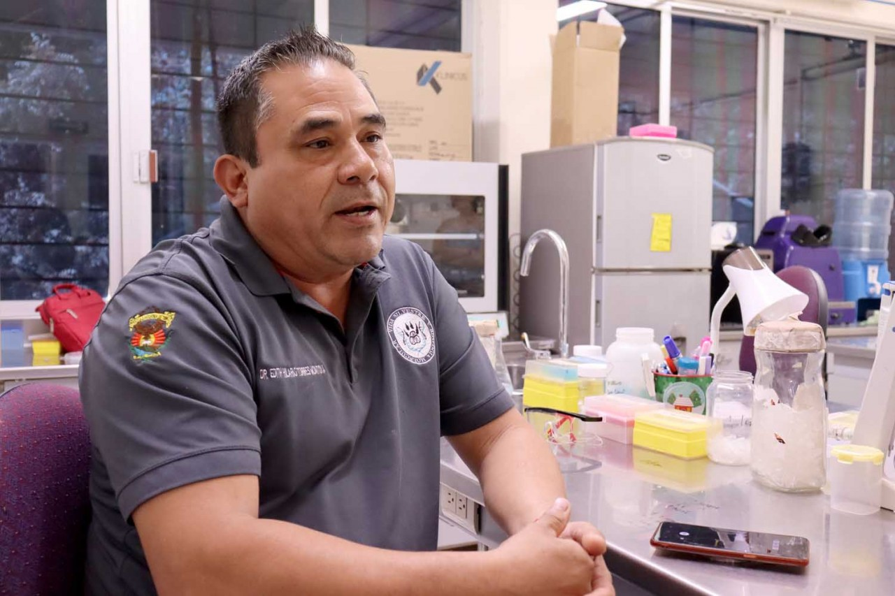

Sembrarán en los niños la semilla de la conservación del mundo natural

Acercar el mundo natural a los niños desde tres ejes para generar a temprana edad el valor a la madre tierra. Leer noticia completa